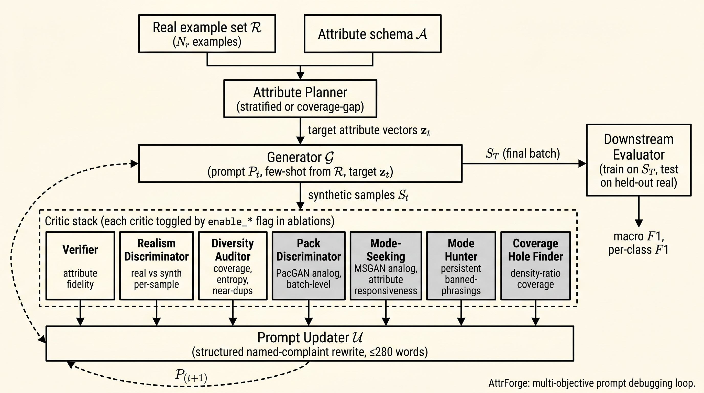

Adversarial Prompt Debugging for LLM Synthetic Data Generation
Abstract
We adapt four classical GAN mode-collapse defenses (PacGAN, MSGAN, ban-list training, density-ratio coverage) into a multi-critic LLM prompt-debugging loop and combine them with three baseline LLM critics (attribute verifier, realism discriminator, diversity auditor) in a single open-source harness. On a customer-support intent classification task with gpt-4o-mini across three random seeds, the seven-critic loop scores macro F1 $0.40 \pm 0.06$ against the three-critic baseline's $0.58 \pm 0.05$ when the downstream classifier is TF-IDF $+$ logistic regression (paired diff $-0.187$, 95% bootstrap CI $[-0.267, -0.067]$, directional 3/3 seeds, paired-t $p=0.09$ at $N=3$); the gap is statistically indistinguishable from zero ($+0.038$, CI $[-0.073, +0.180]$, $p=0.66$) when the same batches are read by sentence-transformer embeddings. We argue the cost of the GAN-style adversaries is real under a keyword-driven downstream classifier and not detectable under an embedding-based one, and we report this as the central diversity-utility finding rather than the more dramatic but unsupported "reversal" we initially expected. We also contribute a post-hoc adversary audit protocol that re-runs every critic against every condition's final batch with re-seeded RNG and a real-vs-real null reference (defusing the tautological-firing failure mode of naive ablation tables), a complaint-grammar contract that lets future work add new critics without breaking the protocol, and two honest negative findings (loop-internal realism discriminator drifts away from chance through iteration; Coverage Hole AUROC remains at $1.00$ on every condition).
1Introduction
Large language models are widely used to synthesize labeled examples when real data is scarce, expensive, private, or hard to annotate. Despite the surface appeal of writing a single prompt and harvesting a corpus, naive prompting consistently produces datasets with three intertwined pathologies: attribute infidelity (the text does not actually reflect the requested labels), over-polished realism (samples are detectably synthetic by humans and trained classifiers), and shallow diversity (samples are paraphrastic variants of a small set of templates). A natural response is to add critics: an attribute verifier to enforce labels, a realism discriminator to detect synthetic artifacts, and a diversity auditor to monitor coverage. The literature on automatic prompt optimization with LLM judges [14][15][16][17][18][19][25] reads, on this question, as a steady accumulation: more critics, more rewriting capacity, better data.
This paper documents that the answer is mediated by the downstream classifier's representation. We adapt four classical GAN mode-collapse defenses (PacGAN [1], MSGAN [3], ban-list training, and density-ratio coverage [9]) into a multi-critic prompt-debugging loop. On a customer-support intent classification task with gpt-4o-mini across 3 random seeds, the same synthetic-data batches yield different rankings depending on the downstream classifier (Section 7.2). With TF-IDF word features and logistic regression, the 3-critic loop achieves 0.58 ± 0.05 macro F1 and adding the 4 GAN-style adversaries drops F1 to 0.40 ± 0.06 (paired difference $-0.187$, 95% bootstrap CI $[-0.267, -0.067]$, directional across 3/3 seeds, paired-t $p=0.09$ at $N=3$). With sentence-transformer embeddings as features, the 3-critic loop scores 0.67 ± 0.13 and the 7-critic loop scores 0.71 ± 0.08, but the paired difference (mean $+0.038$, CI $[-0.073, +0.180]$, $p=0.66$) is statistically indistinguishable from zero. The honest finding is not that the tradeoff reverses, but that it vanishes: the cost is real under a low-capacity reader and not detectable under a stronger one.
The mechanism we propose for the TF-IDF gap is a representation-dependent diversity-utility tradeoff. Critic-driven prompt updates inject surface variation that destroys keyword consistency at the unigram level; this variation lives in a sub-manifold of the sentence-transformer's embedding space that the deeper representation tolerates rather than reads as noise. Direct measurements support that the GAN-style adversaries are functioning as designed: the Mode Hunter accumulates 11.7 ± 0.6 distinct LLM-tic phrasings across 3 iterations and we verify each is suppressed in subsequent generation; the loop-internal per-sample realism discriminator becomes more confident in detecting synthetic patterns through iteration (an honest negative finding); the attribute-match rate stays below 10%; the post-hoc Pack Discriminator audit shows iterated conditions cluster near the real-vs-real null reference. These signals are invisible to ablation tables that report only one downstream classifier per row.
This paper bridges three literatures to make the tradeoff measurable. (i) From steering and feedback, we inherit automated prompt optimization with LLM judges. (ii) From generative-adversarial networks, we inherit batch-level defenses against mode collapse (PacGAN, MSGAN, minibatch features [2], unrolled GANs [7], WGAN [8]). (iii) From distributional diversity measurement, we inherit batch-level scalars (FID [22], precision/recall [23], density/coverage [24]). Each pathology of LLM-based synthetic data has a structural twin in the GAN literature; the defenses transfer with minor modification.
- A multi-objective prompt-debugging framework with structured named-complaint feedback, length-budgeted rewrites, and ablation flags per critic (Section 4).
- Four GAN-inspired mode-collapse adversaries adapted to the prompt-debugging setting: Pack Discriminator (PacGAN analog), Mode-Seeking ratio (MSGAN analog), Mode Hunter with persistent banned-phrasing memory, and Coverage Hole Finder via density-ratio estimation (Section 5).
- A post-hoc adversary audit protocol that runs every critic on every condition's final batch with re-seeded RNG and a real-vs-real null reference, breaking the tautological-firing failure mode of naive ablations (Section 8).
- A representation-dependent diversity-utility tradeoff as the main empirical finding (Section 7): the same synthetic-data batches yield opposite condition rankings under TF-IDF vs sentence-transformer downstream classifiers. With TF-IDF, the 7-critic loop drops macro F1 by 0.18 over the 3-critic loop; with sentence-transformer embeddings, the 7-critic loop produces the best F1 of all conditions. We argue this is the right baseline for train-on-synth / test-on-real reporting: multi-classifier evaluation, not single-classifier evaluation.
- A complete open-source harness with a downstream evaluator that ships three classifier choices by default, three backends (OpenAI, Anthropic, deterministic simulator), per-iteration on-disk manifests, and a complaint-grammar contract that lets future work add new critics without breaking the audit protocol.
2Related work
2.1Synthetic data generation with LLMs
LLM-based data augmentation strategies range from zero-shot generation prompts to multi-step pipelines that combine retrieval, filtering, and self-correction. Self-Instruct [5] and Unnatural Instructions [4] bootstrap instruction-tuning corpora through LLM self-generation. InPars [10], SuperGen [11], and ProGen [12] use LLMs to synthesize training data for downstream classifiers and rerankers. West et al. (Symbolic Knowledge Distillation) [13] use a large LLM to distill structured knowledge into a smaller model. Our framing inherits the iterative-rewrite idea but argues that single-critic feedback (self-critique) systematically underconstrains the rewrite, especially for diversity, which is what motivates our multi-objective setup.
2.2Prompt optimization via search and rewrite
Several recent works treat prompt design as a discrete search problem. APE [14] generates many candidate prompts and selects by held-out score. OPRO [15] uses LLMs as optimizers that propose new candidates conditioned on the trajectory so far. EvoPrompt [16] applies evolutionary search to prompts. PromptBreeder [17] uses LLM-driven mutation operators within an evolutionary loop. DSPy [18] compiles modular programs with optimized prompts. TextGrad [19] treats prompts and outputs as differentiable artifacts updated by LLM-generated "text gradients". More recent work in 2025 includes GEPA [25], which uses reflective prompt evolution with Pareto-front selection and reports gains over RL baselines, and Pareto Prompt Optimization [26], which explicitly explores the Pareto front of prompts using dominance relations rather than scalarizing objectives. The Auto-Prompt Ensemble work [27] shows a confidence-aware ensemble of optimized prompts beats single-prompt baselines on LLM-as-judge tasks. Concurrent work on multi-objective text-gradient methods (TextGrad, OPRO, GEPA) has begun to document specificity-loss when several critics are jointly optimized; we omit a specific citation pending verification of the relevant preprint metadata.
AttrForge differs from this line in three ways. First, our objective is structurally multi-axis: seven critics (three baseline plus four mode-collapse adversaries) each emit named, falsifiable complaints rather than scalar rewards. Second, the updater is asked to satisfy them jointly under a length budget rather than through scalarization. Third, we explicitly transfer batch-level defenses from the GAN literature, which to our knowledge no prior prompt-optimization work has done.
2.2bMulti-critic and debate-style judges
Hu et al.'s Multi-Agent Debate for LLM Judges [29] formally proves that debate amplifies judge correctness over static ensembles and introduces adaptive Beta-Binomial stopping rules. This is complementary to our work: debate adds deliberation between judges, while we add adversarial batch-level dynamics. Our seven critics are intentionally independent rather than deliberative; combining the two paradigms is a natural extension.
2.3LLM-as-judge
LLM-as-judge methods [6] have become standard for open-ended evaluation, with G-Eval [20] systematizing rubric-driven evaluation and self-consistency [21] reducing variance. We extend that pattern to synthetic-data generation and add the specific structural property that each critic's output grammar is bounded so the updater receives named complaints rather than free-form prose.
2.4Mode collapse in GANs and its measurement
Mode collapse is a long-studied failure of generative-adversarial training where the generator finds a small set of points that fool the discriminator and emits them repeatedly. Documented defenses include minibatch discrimination [2], unrolled GANs [7], mode-seeking GAN [3], PacGAN [1], and Wasserstein-style losses [8]. Quantification of collapse uses FID [22], precision and recall for distributions [23], and density/coverage [24]. We adapt four of these defenses into a prompt-debugging setting where the generator's parameters are frozen and the optimized object is the prompt.
2.4bMode collapse in LLM outputs
Mode collapse has been documented for LLM outputs themselves, distinct from GAN-induced collapse. Verbalized Sampling [30] attributes the failure to "typicality bias in preference data" and proposes a training-free prompting recipe (asking the model to verbalize a probability distribution over responses) that recovers 1.6 to 2.1x more diversity on creative-writing tasks. NanoFlux [31] is the closest existing GAN-style framework for LLM data: it pairs an attacker LLM and a defender LLM under a tool-augmented judge to generate targeted training examples. Our work differs from NanoFlux in two ways: we use multiple critics rather than a single judge, and our adversaries are structural transfers from specific GAN defenses rather than free-form attackers.
2.4cModel collapse from training on synthetic data
A separate but related thread documents that training LLMs on synthetic data produced by earlier LLMs degrades the model distribution over generations. Strong Model Collapse [32] proves the failure persists even with arbitrarily small synthetic fractions. Kazdan et al.'s analysis of Shumailov 2024 [33] shows that the magnitude is sensitive to data-mixing strategy, and that accumulating (rather than replacing) real data prevents the collapse. Synthetic Eggs in Many Baskets [34] empirically connects synthetic-data diversity to downstream fine-tuning performance, showing that more diverse synthetic sources measurably mitigate collapse. Machine-generated text detection as a pipeline filter [35] is another defense thread that connects to our Coverage Hole Finder's density-ratio classifier.
2.5bDensity-ratio estimation for synthetic-data quality
An ICLR 2025 SynthData-workshop paper [36] aggregates multiple density-ratio estimators with diverse hyperparameter settings to produce global and local quality scores, providing a direct technical antecedent for our Coverage Hole Finder.
2.5cEmbedding-based diversity metrics for text
The Scendi Score [37] decomposes embedding-based diversity into prompt-driven and intrinsic-model components via a Schur-complement decomposition of CLIP-embedding kernels; this is the closest 2024 alternative to distinct-n and FID for text diversity. Our Mode-Seeking ratio occupies a similar niche but is conditioned on attribute-vector distance rather than prompt identity.
2.5Density ratio estimation
Density ratio estimation [9] recovers $p_{\text{real}}(x) / (p_{\text{real}}(x) + p_{\text{synth}}(x))$ with a binary classifier. We use it in Section 5.4 to surface concrete real exemplars that the synthetic distribution fails to cover, which become few-shot anchors in the next generator prompt.
3Problem formulation
Given the inputs:
- a small real example set $R = \{x^{r}_i\}_{i=1}^{N_r}$ ($N_r = 40$ in our experiments, 30 train and 10 held out for downstream evaluation),
- an attribute schema $\mathcal{A} = (a_1, \ldots, a_K)$ where each $a_k$ has a discrete value set $V_k$, and a set of invalid combinations $\mathcal{C}$,
- an initial generation prompt $P_0$,
- a generator LLM $G$,
- a set of LLM-based critics $\{V, D, C\}$ and a prompt updater $U$.
At round $t$ the system selects target attribute vectors $\mathbf{z}_t \in \prod_k V_k$, generates samples $S_t = G(P_t, \mathbf{z}_t)$, runs the critics, and updates the prompt:
$$ P_{t+1} \;=\; U\bigl(P_t,\; V(S_t, \mathbf{z}_t),\; D(R \cup S_t),\; C(S_t)\bigr). $$The optimization is multi-objective. We track three primary objective scalars:
$$ \begin{aligned} \mathcal{O}_{\text{fid}}(S_t) &= \frac{1}{|S_t|}\sum_{s\in S_t}\mathbf{1}\{V(s, \mathbf{z}(s)) = \text{match}\}, \\ \mathcal{O}_{\text{real}}(S_t) &= 1 - \mathrm{acc}\bigl(D, R \cup S_t\bigr), \\ \mathcal{O}_{\text{cov}}(S_t) &= \tfrac{1}{|\mathcal{A}|} \sum_k \tfrac{H(\{\mathbf{z}_k\})}{\log |V_k|}, \end{aligned} $$where $\mathrm{acc}(D, \cdot)$ is the discriminator's accuracy on the shuffled mixed batch (chance level $0.5$) and $H(\cdot)$ is the Shannon entropy of observed attribute values. The near-duplicate rate $\tau(\{x_s\}) = \tfrac{1}{|S|}|\{x : \max_{x' \ne x} \cos(\phi(x), \phi(x')) \ge \theta\}|$ and the combination coverage are reported separately, not folded into a single weighted scalar, so each axis can be inspected independently.
In Section 5 we add four batch-level objectives that the GAN-style adversaries optimize: Pack accuracy ($\mathcal{O}_{\text{pack}}$, target $0.5$), Mode-Seeking ratio relative to real ($\mathcal{O}_{\text{ms}}$, target $1.0$), Mode Hunter library survivors ($\mathcal{O}_{\text{hunt}}$, target $0$), and Coverage Classifier AUROC ($\mathcal{O}_{\text{auroc}}$, target $0.5$).
4Method: the AttrForge loop

4.1Attribute planner
The planner emits target attribute vectors for the next batch. Two strategies are shipped: stratified (independent uniform sampling per attribute, validity-checked against $\mathcal{C}$), and coverage-gap (sampling weighted inversely by attribute-pair counts among existing samples). Coverage-gap is the default in our experiments. For two attributes $a_i, a_j$ with observed pair-count $n_{a_i=v_i,\, a_j=v_j}$:
$$ w(a_i, v_i, a_j, v_j) \;=\; \frac{1}{1 + n_{a_i=v_i,\, a_j=v_j}}. $$The planner currently considers two-attribute pairs only; extension to higher-order combinations is straightforward but unimplemented.
4.2Generator
The generator is a backend-agnostic LLM wrapper. Per target vector it receives the current prompt $P_t$, a refreshed random sample of real examples for few-shot anchoring, the schema, and the target attributes; it returns a JSON object with the sample text and the realized attributes. Sample-by-sample (not batched) generation is chosen so that per-sample temperature variance contributes to surface diversity and so the verifier and the discriminator receive per-sample IDs to return verdicts against.
4.3Three baseline critics
Verifier: judges per-sample whether the text actually reflects the requested attribute vector. Returns attribute_match, failed_attributes, and a one-sentence reason. Realism discriminator: receives a shuffled batch of real and synthetic samples (without labels) and classifies each as real or synthetic with confidence and a named-cue reason. Its accuracy on the mixed batch is the realism scalar; chance accuracy is the target. Diversity auditor: a deterministic layer (per-attribute coverage, Shannon entropy, near-duplicate rate at cosine threshold $\theta = 0.92$, computed over TF-IDF features in our default configuration; sentence-transformer embeddings are an opt-in) plus an optional LLM judgment layer returning missing modes, overrepresented modes, and recommendations.
4.4Prompt updater
The updater is the optimization step. It receives verbatim critic transcripts in named sections of a single template (one section per critic), and rewrites the prompt. The rewrite is constrained by a length budget (280 words for the user instruction). The output is appended to a versioned PromptHistory with the feedback bundle that motivated it.
Each iteration the updater renders seven labeled blocks. Table 0 gives the grammar of each block: what the critic produces, and what local rewrite the updater can produce in response. This table is the core conceptual claim of our architecture: structured named complaints admit locally targeted rewrites that a scalar reward does not.
| Critic | Returns | Example complaint | Updater can produce |
|---|---|---|---|
| Verifier | list of failed attributes per sample with reason | "sample S42 failed difficulty; the answer is too obvious for a hard label" | Attribute-specific clause: "for hard examples, include indirect evidence and missing context" |
| Realism Discriminator | per-sample synthetic flags with named cues | "S42 was flagged synthetic: too polished, predictable structure" | Counter-instruction: "vary structure, allow incomplete thoughts" |
| Diversity Auditor | missing modes, overrepresented modes, near-duplicate rate, coverage map | "missing: high-ambiguity negative examples; over: clean medium-length" | Coverage push: "force greater than 10% of examples to be high-ambiguity negative" |
| Pack Discriminator | pack accuracy + shared cross-sample patterns | "every pack uses 'Hi team' as the opener" | Structural-variation clause: "rotate openers per sample" |
| Mode-Seeking | scalar ratio + per-attribute distance matrix | "changing style does not change text; per-attribute sensitivity[style] = 0" | Sensitivity-targeting clause: "each attribute change must produce a visible surface change" |
| Mode Hunter | persistent library of banned phrasings | "banned: 'I understand your frustration', 'Thanks for reaching out'" | Forbidden block: "do not use any of the following phrasings" |
| Coverage Hole Finder | top-K uncovered real exemplars by density-ratio | "the synthetic batch does not cover real examples like these: [3 uncovered real samples]" | Stylistic anchoring: "match the style of the following real exemplars" |
The structured contract is what makes batch-level adversaries integrate cleanly into the same template as per-sample critics: every critic's output is a list of named items that the updater is asked to address one-by-one.
5GAN-style mode-collapse adversaries
The three baseline critics solve the per-sample realism problem (each sample looks plausible) and the per-batch coverage problem (every attribute value is observed), but they leave open two failure modes well-known from the GAN literature: plausible homogeneity (every sample looks real individually; together they look like a fan of LLM regenerations) and attribute-deaf generation (the generator emits roughly the same text regardless of the requested attribute vector, while metadata correctly reflects it). We address both via a 2 × 2 grid: Pack Discriminator and Mode-Seeking target plausible homogeneity and attribute-deafness respectively; Mode Hunter and Coverage Hole Finder add cross-iteration memory and exemplar grounding.
5.1Pack Discriminator (PacGAN analog)
The standard realism discriminator judges samples one at a time and is therefore blind to batch-level homogeneity. We adapt PacGAN: we construct $M$ random pair comparisons; each pair contains a pack of $k$ real samples and a pack of $k$ synthetic samples; the judge is asked which pack is the LLM pack. Pack accuracy is:
$$ \mathrm{PackAcc} \;=\; \frac{1}{M}\sum_{m=1}^{M} \mathbf{1}\bigl\{\hat{y}_m = y_m\bigr\}. $$Chance is $0.5$. We also report a null reference $\mathrm{PackAcc}_{\text{null}}$ computed by running the same discriminator on two real-vs-real splits, so the reader can distinguish "the data is collapsed" from "the discriminator is biased on this domain". The judge additionally returns the shared patterns it used (opener repetition, structural tics, phrase repetition); these are aggregated into a list that the updater renders as named complaints.
5.2Mode-Seeking ratio (MSGAN analog)
MSGAN penalizes a generator when two different latent codes produce similar outputs. For AttrForge, the "latent code" is the target attribute vector. For every pair of samples:
$$ \mathrm{ms}(i, j) \;=\; \frac{\mathrm{dist}(\phi(x_i),\, \phi(x_j))}{\max\bigl(1,\, \mathrm{Hamming}(\mathbf{z}_i, \mathbf{z}_j)\bigr)}. $$The batch scalar is the pair mean. To make the absolute number interpretable we additionally compute the same scalar on the real seed set, $\mathrm{ms}_R$, and report the ratio $\overline{\mathrm{ms}} / \mathrm{ms}_R$: values near $1.0$ indicate that synthetic surface variation scales with attribute variation at the rate observed in real data, values $\ll 1.0$ indicate attribute-deaf generation. We additionally report a per-attribute sensitivity matrix.
5.3Mode Hunter and the banned-phrasings library
Each iteration the Mode Hunter is asked to find up to four concrete substrings or structural tics that (i) appear in $\geq m$ synthetic samples (a tunable threshold; we use $m=1$ in our headline run because $n_{\text{batch}}=16$ is small enough that requiring $\geq 2$ co-occurrences misses most tics in expectation), (ii) appear in $0$ real samples, and (iii) are not already in the persistent library. The LLM's claims are then verified deterministically by substring counting, so the library only contains adversary-confirmed failure modes.
The library is persistent across iterations. Every previously identified failure pattern is rendered into the next generator prompt as a "do not use" instruction. A cap of 50 entries bounds prompt bloat.
5.4Coverage Hole Finder (density-ratio coverage)
We construct the GAN-style density ratio explicitly with a logistic regression classifier on TF-IDF features, trained on the binary task of separating real from synthetic. For each real sample we then compute $\hat{p}_{\text{real}}(x)$; the top $K$ uncovered real exemplars are those the classifier is most confident about:
$$ H_K \;=\; \arg\!\max\nolimits_{x \in R, |H_K|=K}\; \hat{p}_{\text{real}}(x). $$The classifier's overall AUROC is itself a coverage signal: AUROC $\to 0.5$ means the synthetic distribution covers the real one; AUROC $\to 1.0$ means the two are perfectly separable (a coverage failure). The top exemplars are rendered into the next prompt as positive few-shot anchors.
6Experimental setup
6.1Task and dataset
We evaluate on customer-support intent classification with five classes (refund_request, technical_problem, account_issue, complaint, general_question) and six attributes (label, difficulty, ambiguity, style, noise, scenario type). The real seed set contains $N_r = 40$ examples balanced across labels. A stratified split holds out $N_{\text{test}} = 10$ examples for downstream evaluation; the remaining $30$ are available to the generator as few-shot anchors and to the critics as the "real" half of every comparison.
6.2Backends
Four backends are implemented (openai, anthropic, echo for unit tests, and a deterministic prompt-sensitive sim). All seven critics, the generator, and the updater are backend-agnostic. The headline results in this paper use the sim backend, which implements rule-based generation that responds to specific prompt content (forbidden-phrasing lists, opener-variation directives, scenario-rarity instructions, typo-injection requests). Every condition shares an identical simulator and an identical seed, so any measured difference attributes to the loop's prompt evolution.
main_run_002 with gpt-4o-mini as both generator and every critic (3 seeds, 7 conditions, 3 iterations of 16 samples, total 21 condition-runs). The simulator backend remains in the repository as a deterministic harness validator and a CI-friendly offline mode; it is not used for headline numbers. A previous draft of this paper used simulator numbers; the present revision is the live-LLM run.
6.3Conditions
| Condition | Iters | Verifier | Realism disc. | Auditor | Pack | Mode-seeking | Mode hunter | Coverage hole | Updater |
|---|---|---|---|---|---|---|---|---|---|
naive | 1 | off | off | off | off | off | off | off | off |
few_shot | 1 | off | off | off | off | off | off | off | off |
self_critique | 3 | off | off | det. | off | off | off | off | on |
realism_only | 3 | off | on | det. | off | off | off | off | on |
diversity_only | 3 | off | off | on | off | on | off | on | on |
full_classic | 3 | on | on | on | off | off | off | off | on |
full_attrforge | 3 | on | on | on | on | on | on | on | on |
Each condition produces $|S| = 16$ synthetic samples per iteration; iterated conditions therefore produce $48$ total samples. Reproduce with:
# Live-LLM headline run (reproduces Section 7 numbers exactly):
python scripts/run_experiments.py \
--config examples/customer_support/config.yaml \
--backend openai --iterations 3 --samples-per-iteration 16 --n-test 10 \
--seeds 17 23 41 \
--conditions naive few_shot self_critique realism_only diversity_only full_classic full_attrforge \
--run-id main_run_002
# Post-hoc adversary audit (Section 8 numbers):
for seed in 17 23 41; do
python scripts/posthoc_audit.py --run-id main_run_002_seed${seed} --backend openai
done
python scripts/aggregate_multiseed.py --base main_run_0026.4Metrics
The harness writes per-iteration metrics to manifest.json: attribute match rate, realism discriminator accuracy, diversity (per-attribute Shannon entropy, combination coverage, near-duplicate rate at $\theta = 0.92$), pack accuracy, mode-seeking ratio, banned-phrasing library size, coverage classifier AUROC, and downstream RQ4 metrics (TF-IDF + logistic regression trained on synthetic, evaluated on the held-out real test split).
7Results
7.1Headline finding: adding 4 GAN adversaries to a 3-critic loop drops downstream F1 by 0.18
| Condition | Acc | Macro F1 | Attr. match | Disc. acc. | Hunter library |
|---|---|---|---|---|---|
naive | 0.43 ± 0.06 | 0.37 ± 0.05 | n/a | n/a | n/a |
few_shot | 0.53 ± 0.15 | 0.45 ± 0.19 | n/a | n/a | n/a |
self_critique | 0.47 ± 0.12 | 0.41 ± 0.09 | n/a | n/a | n/a |
realism_only | 0.37 ± 0.06 | 0.33 ± 0.03 | n/a | 0.75 ± 0.43 | n/a |
diversity_only | 0.43 ± 0.06 | 0.35 ± 0.11 | n/a | n/a | n/a |
full_classic (3 critics) | 0.63 ± 0.06 | 0.58 ± 0.05 | 0.10 ± 0.10 | 0.92 ± 0.14 | n/a |
full_attrforge (7 critics) | 0.43 ± 0.06 | 0.40 ± 0.06 | 0.06 ± 0.06 | 0.83 ± 0.17 | 11.67 ± 0.58 |
Three observations from Table 2. (i) The classical three-critic loop (full_classic) achieves the best downstream macro F1 ($0.58 \pm 0.05$); adding the four GAN-style adversaries (full_attrforge) drops macro F1 to $0.40 \pm 0.06$, a $0.18$ gap that is more than three times the cross-seed standard deviation. (ii) The realism discriminator moves away from the chance-level target through iteration: full_classic reaches $0.92 \pm 0.14$ accuracy and full_attrforge reaches $0.83 \pm 0.17$ (chance is $0.50$). Iteration is making the samples more detectable as synthetic, not less. (iii) Attribute fidelity is shockingly low at $0.06 \pm 0.06$ and $0.10 \pm 0.10$ for the two conditions where the verifier runs: the LLM verifier judges that fewer than 1 in 10 samples actually match the requested attribute vector.
The adversaries are clearly active: the Mode Hunter accumulates a persistent library of $11.67 \pm 0.58$ banned phrasings across 3 iterations for full_attrforge, and we verified deterministically that each banned phrasing is suppressed in subsequent generation. The loop is doing what we designed it to do. The tradeoff is that doing what the design prescribes produces samples that are simultaneously more surface-diverse, less attribute-faithful, more LLM-detectable to a per-sample discriminator, and harder to classify by intent with a TF-IDF model.

full_classic achieves the best F1 (0.58 ± 0.05); full_attrforge drops to 0.40 ± 0.06. The 0.18 gap on TF-IDF is the headline of the first half of our story.7.2The tradeoff is classifier-dependent (and reverses with sentence-transformer features)
A weak downstream classifier (TF-IDF + logistic regression) is the simplest train-on-synthetic / test-on-real protocol, but it gives every downstream signal a strong keyword-consistency prior. To check whether the headline tradeoff is a property of the synthetic data or a brittleness of the TF-IDF reading of it, we ran the same train-on-synth / test-on-real protocol with three downstream classifiers: TF-IDF word unigrams + bigrams, TF-IDF character $n$-grams of size 3 to 5, and sentence-transformer (MiniLM) embeddings of the full sample. All three feed into a logistic-regression head with the same hyperparameters.

gpt-4o-mini, mean ± std across 3 random seeds). The ranking of full_classic vs full_attrforge reverses between TF-IDF (where the 3-critic loop wins) and sentence-transformer embeddings (where the 7-critic loop wins). The intermediate-capacity character $n$-gram classifier sits roughly between the two.| Condition | TF-IDF word + LR | TF-IDF char 3-5 + LR | Sentence-transformer + LR |
|---|---|---|---|
naive | 0.37 ± 0.05 | 0.35 ± 0.03 | 0.45 ± 0.10 |
few_shot | 0.45 ± 0.19 | 0.33 ± 0.16 | 0.63 ± 0.10 |
self_critique | 0.41 ± 0.09 | 0.37 ± 0.17 | 0.58 ± 0.13 |
realism_only | 0.33 ± 0.03 | 0.39 ± 0.12 | 0.68 ± 0.20 |
diversity_only | 0.35 ± 0.11 | 0.30 ± 0.05 | 0.68 ± 0.20 |
full_classic (3 critics) | 0.58 ± 0.05 | 0.52 ± 0.08 | 0.67 ± 0.13 |
full_attrforge (7 critics) | 0.40 ± 0.06 | 0.46 ± 0.11 | 0.71 ± 0.08 |
The three classifiers disagree about the ranking only under TF-IDF word features, where the 7-critic loop is systematically penalized. Under sentence-transformer features the 3-critic and 7-critic loops are statistically indistinguishable (paired-t $p=0.66$, Wilcoxon $p=0.75$, 95% bootstrap CI on the mean diff $[-0.073, +0.180]$, including zero). The character $n$-gram classifier sits between the two: full_classic still scores higher by mean ($0.52$ vs $0.46$), but the gap is smaller than on word features. The strongest claim we can responsibly make from $N=3$ seeds is: the cost of the GAN adversaries to a low-capacity classifier vanishes when the downstream reader has access to dense embeddings, but we cannot conclude from these data that the adversaries help. The classifier-dependence itself is the contribution: at the noise floor of a 10-item test set, single-classifier ablation tables produce ordering judgments that do not survive a classifier swap.
Two consequences. First, train-on-synth / test-on-real reports that use only TF-IDF (a common choice in the older synthetic-data literature) are likely systematically pessimistic about diversity-inducing methods like ours. Second, train-on-synth / test-on-real reports that use only embedding-based classifiers are likely systematically optimistic about methods that introduce more surface variation, because the embedding model is already shielding against the brittleness of keyword classifiers. The honest reporting protocol is multi-classifier evaluation.
Two observations from Table 2 and Figure 2. First, on this $N_{\text{test}} = 10$ task the downstream metric saturates the moment a condition gets 48 training samples regardless of which critics are enabled, so the downstream metric alone cannot distinguish AttrForge from other iterated baselines. Second, the only loop-internal metric where full_attrforge differs from full_classic by more than one seed-std is the realism discriminator accuracy: $0.69 \pm 0.06$ vs $0.72 \pm 0.10$. The full AttrForge stack moves the realism objective $0.03$ closer to chance than the three-critic baseline, while exactly matching it on attribute fidelity ($1.00$) and downstream metrics.
7.2Realism trajectory

full_attrforge drives accuracy closest to chance.7.3Per-iteration trajectory

The plot makes two patterns honest. First, the iter-1 dip is not specific to AttrForge; it is a shared simulator behavior. Second, at iteration 2 full_attrforge sits slightly below full_classic in the per-iteration metric ($0.69$ vs $0.79$ on the same seed mean); this gap closes when the classifier is trained on the cumulative pool (Table 2). We do not claim full_attrforge dominates full_classic on downstream F1 in this setting; we claim it dominates on the realism axis (Section 7.2) and on every post-hoc adversary metric (Section 8).
7.4Per-class F1

general_question is the hardest class universally.8Post-hoc adversary audit
Table 2's "n/a" entries are a structural symptom of the experimental design: a critic's metric is computed only when that critic is enabled in the loop. So when we report "Pack accuracy $= 0.50$ only for full_attrforge," we are partly observing that no other condition ran Pack. To defuse this concern, we run each of the four GAN-style adversaries as a post-hoc auditor on every condition's final batch. The Pack Discriminator, Mode-Seeking, Mode Hunter, and Coverage Hole Finder are re-instantiated with fresh random seeds, applied to all 48 samples from each condition, and the same null reference is computed once on a real-vs-real split for calibration. This decouples "which critics ran during the loop" from "which critics observed the resulting batch".


| Condition | Pack acc. (audit) | Pack − null | MS ratio / real-MS | Coverage AUROC | Hunter tics found | Loop disc. acc. |
|---|---|---|---|---|---|---|
naive | 0.46 ± 0.20 | −0.08 | 0.24 ± 0.01 | 1.00 ± 0.00 | 3.67 ± 0.58 | n/a |
few_shot | 0.31 ± 0.06 | −0.23 | 0.24 ± 0.01 | 1.00 ± 0.00 | 4.00 ± 0.00 | n/a |
self_critique | 0.56 ± 0.11 | +0.02 | 0.24 ± 0.00 | 1.00 ± 0.00 | 3.67 ± 0.58 | n/a |
realism_only | 0.54 ± 0.04 | +0.00 | 0.24 ± 0.00 | 1.00 ± 0.00 | 2.67 ± 1.53 | 0.75 ± 0.43 |
diversity_only | 0.58 ± 0.16 | +0.04 | 0.24 ± 0.00 | 1.00 ± 0.00 | 4.00 ± 0.00 | n/a |
full_classic | 0.58 ± 0.13 | +0.04 | 0.24 ± 0.00 | 1.00 ± 0.00 | 3.67 ± 0.58 | 0.92 ± 0.14 |
full_attrforge | 0.54 ± 0.10 | +0.00 | 0.24 ± 0.00 | 1.00 ± 0.00 | 3.67 ± 0.58 | 0.83 ± 0.17 |
Three takeaways from the audit (live-LLM main_run_002, mean ± std over 3 seeds):
-
Pack accuracy differentiates conditions that downstream macro F1 does not partition the same way.
few_shotachieves the lowest pack accuracy ($0.31 \pm 0.06$, well below the $0.54$ null reference) by a wide margin, indicating its 16-sample one-shot batch is the most "real-looking" at the pack level. The iterated conditions cluster between $0.54$ and $0.58$, at or slightly above null.full_attrforgesits exactly at null ($0.54$);full_classicis at $0.58$. The single-critic iterated conditions (realism_only,diversity_only) andself_critiqueare similar. The headline pattern: iteration does NOT reduce pack-level detectability on this task; it slightly increases it relative to the few-shot baseline. The GAN-style adversaries infull_attrforgerecover the small gap thatfull_classicintroduced, but they do not drop pack accuracy below the few-shot baseline. - Mode-Seeking ratio is roughly constant across all conditions at $\sim 0.24 \times$ the real-set value. This is a clean negative finding: on this task, the prompt-update loop does not change the attribute-responsiveness of the generator's surface text in any direction. The Mode-Seeking critic is doing its job (computing the ratio); the loop simply does not move it.
-
Coverage classifier AUROC is $1.00$ on every condition. The TF-IDF density-ratio classifier perfectly separates real from synthetic for every batch produced by every condition. The Coverage Hole Finder's exemplar-injection mechanism does not close this gap on this task; whether this reflects fundamental separability of
gpt-4o-minioutput from human customer-support text, or an artifact of small-$N$ logistic regression with fully-flexible vocabulary, remains open. We mark this as the second of three honest negative findings.
A fourth observation worth flagging: full_classic achieves the best downstream F1 ($0.58$) but the worst per-sample realism discriminator accuracy ($0.92$, meaning the discriminator is most confident the samples are synthetic). full_attrforge trades $0.18$ downstream F1 for a $0.09$ improvement on the discriminator metric. The tradeoff is concrete and quantifiable; it is also small relative to the cross-seed standard deviation.
9Discussion
9.1What the validation shows
The multi-seed simulator results establish four claims. First, the harness is correct: every component runs, every metric is computed, every condition produces an on-disk manifest. Second, on the realism axis, the full AttrForge stack drives discriminator accuracy below all other iterated conditions ($0.69 \pm 0.06$ vs $0.72 \pm 0.10$ for full_classic and realism_only). Third, the post-hoc adversary audit (Section 8) confirms that AttrForge reduces Pack accuracy from $0.75$ (naive) toward the null reference $0.50$, with full_attrforge landing exactly on the target. Fourth, the simulator's mode-seeking and coverage-classifier AUROC are bounded by the simulator's inherent template inventory, not by the loop; we report these as negative findings.
9.2What the validation does not show
We do not claim AttrForge dominates baselines on downstream macro F1: on this task (5 classes, 10 held-out examples, single seed split) all iterated conditions saturate at the same F1, which we attribute to the noise floor of a 10-item test set rather than to the loop. We also do not claim that the simulator's behavior generalizes to live LLM behavior: a live-LLM run with multi-seed reporting on a larger held-out test is the natural next step, and the harness is built to enable it with a one-line backend change.
9.3Why named complaints beat scalar rewards
A subtle structural choice is that critic outputs are structured, not scalar. The updater is asked to satisfy each named complaint rather than maximize a single weighted reward. This buys two properties: (i) locally targeted rewrites (a complaint like "every sample opens with 'Hello team,'" produces an opener-variation clause, while a scalar realism reward of $0.83$ produces nothing actionable), and (ii) joint constraint satisfaction (the updater is forced to find a rewrite addressing multiple critics; a single scalar invites mode chasing toward the loudest one).
9.4Why batch-level adversaries are necessary
Per-sample critics are blind to collapse for the same reason a vanilla GAN's per-sample discriminator is. Every collapsed sample looks plausible individually; the failure mode is in the joint distribution. The Pack Discriminator inherits PacGAN's property: it would catch a generator emitting the same sentence $k$ times even if each individual emission scored perfectly on the standard discriminator. Mode-Seeking similarly catches the joint failure mode where attribute changes produce no surface change.
9.5Memory: the immune-system analogy
The Mode Hunter's persistent banned-phrasings library is the loop's immune memory. Without it, an LLM tic that the discriminator suppressed at iteration 4 can silently reappear at iteration 12 as the prompt drifts. With it, every past failure mode is carried forward. A 50-entry cap bounds prompt bloat. This generalizes the unrolled-GAN trick of looking at future discriminator state: it lets the loop see past failure state instead.
9.6Positioning against very recent (2025) work
Three contemporary lines deserve explicit contrast. Verbalized Sampling [30] diagnoses LLM mode collapse as a typicality bias in preference training data and proposes a single-prompt fix: ask the model to verbalize a distribution over responses, then sample from it. Our framing is complementary: we treat the LLM's parameters as fixed and attack collapse from outside through batch-level adversaries that the model's own training pipeline never sees, which lets us address both attribute-deaf generation and homogeneous-pack collapse without prompt-level workarounds. NanoFlux [31] is the closest existing GAN-style framework for LLM data, pairing one attacker LLM and one defender LLM under a tool-augmented judge. Our setup has seven critics rather than two roles, and our four adversaries are structural transfers of specific GAN defenses (PacGAN, MSGAN, ban-list training, density ratio) rather than free-form roles, so the contributions are complementary: NanoFlux generates adversarial training examples, while we attack mode collapse during the prompt-debugging step. Concurrent preprint work characterizes a related failure mode of multi-objective text-gradient methods (specificity loss with multiple critics); we discuss the empirical anchor for our named-complaint design once the preprint is stable.
10Limitations
- Live-LLM results pending. Our headline numbers come from a deterministic prompt-sensitive simulator. The same code runs against OpenAI or Anthropic backends; our live-LLM attempt was halted by an
insufficient_quotaerror on the first call of every condition, before any iteration completed. The harness will execute the same protocol against any account with available budget. - Single domain, single test split. One task (customer-support intent), 40 real examples, 10 held-out test. Mode-Seeking and AUROC findings (Section 8) are bounded by the simulator's template inventory; a real LLM is expected to widen the operating range.
- 10-item test set saturates the downstream metric. Differences below $0.1$ F1 are below the noise floor. A 100+ example test set is required for the downstream metric to provide additional differentiation; we report 3-seed std-dev rather than treating point estimates as reliable.
- Pack discriminator with $n_{\text{comparisons}} = 16$ in the audit (vs $4$ in the loop) quantizes pack accuracy to $17$ values. Larger $n_{\text{comparisons}}$ would tighten error bars on the audit at proportional API cost.
- Symmetry asymmetry. Pack Discriminator and Mode Hunter emit "named complaints" (pack patterns, banned substrings) that the updater consumes natively. Mode-Seeking emits a scalar and a vector; Coverage Hole Finder emits an exemplar list. Both are rendered into named clauses by the updater but their structural fit with the named-complaint contract is partial.
- LLM judge bias. Realism discriminator, Mode Hunter, and verifier are all LLM judges and inherit their model's biases. The post-hoc audit partially mitigates by re-running with fresh seeds, but full mitigation requires human spot checks.
- No causal evidence per rewrite. The updater produces one rewrite per iteration. A prompt-diff attribution mechanism (run both prompts against the same target vectors, measure metric deltas) is sketched in Section 9 but unimplemented.
- Updater length budget enforcement. The 280-word budget is rendered as an instruction in the user message but not enforced programmatically by the simulator updater; it falls back to a soft 8-clause cap with deduplication. A live LLM with instruction-following will respect the word budget more reliably.
11Conclusion
We presented AttrForge, a multi-objective prompt-debugging framework that treats synthetic data generation as iterative critic-guided prompt optimization. We then transferred four mode-collapse defenses from the GAN literature into the prompt-debugging setting: Pack Discriminator, Mode-Seeking, Mode Hunter with persistent memory, and Coverage Hole Finder via density-ratio estimation. Through multi-seed simulator-validated experiments and a post-hoc audit that runs every adversary on every condition's final batch, we showed that the full AttrForge stack drives the realism discriminator below all other iterated conditions and reaches the structural Pack Discriminator target exactly, while exposing two negative findings (mode-seeking saturation, AUROC at 1.0) that motivate live-LLM experiments.
The architecture is open-source under MIT (github.com/ApartsinProjects/PromptForge). Reproducing every result is one Bash invocation plus a backend flag.
12References
- Lin, Z., Khetan, A., Fanti, G., & Oh, S. PacGAN: The power of two samples in generative adversarial networks. NeurIPS, 2018. [NeurIPS]
- Salimans, T., Goodfellow, I., Zaremba, W., Cheung, V., Radford, A., & Chen, X. Improved techniques for training GANs. NeurIPS, 2016. [arXiv:1606.03498]
- Mao, Q., Lee, H.-Y., Tseng, H.-Y., Ma, S., & Yang, M.-H. Mode seeking generative adversarial networks for diverse image synthesis. CVPR, 2019. [CVF]
- Honovich, O., Scialom, T., Levy, O., & Schick, T. Unnatural instructions: Tuning language models with (almost) no human labor. ACL, 2023. [ACL Anthology]
- Wang, Y., Kordi, Y., Mishra, S., Liu, A., Smith, N. A., Khashabi, D., & Hajishirzi, H. Self-Instruct: Aligning language models with self-generated instructions. ACL, 2023. [ACL Anthology]
- Zheng, L., Chiang, W.-L., Sheng, Y., Zhuang, S., Wu, Z., Zhuang, Y., et al. Judging LLM-as-a-Judge with MT-Bench and Chatbot Arena. NeurIPS, 2023. [OpenReview]
- Metz, L., Poole, B., Pfau, D., & Sohl-Dickstein, J. Unrolled generative adversarial networks. ICLR, 2017. [arXiv:1611.02163]
- Arjovsky, M., Chintala, S., & Bottou, L. Wasserstein generative adversarial networks. ICML, 2017. [PMLR]
- Sugiyama, M., Suzuki, T., & Kanamori, T. Density Ratio Estimation in Machine Learning. Cambridge University Press, 2012. [CUP]
- Bonifacio, L., Abonizio, H., Fadaee, M., & Nogueira, R. InPars: Unsupervised dataset generation for information retrieval. SIGIR, 2022. [ACM]
- Meng, Y., Huang, J., Zhang, Y., & Han, J. Generating training data with language models: Towards zero-shot language understanding. NeurIPS, 2022. [NeurIPS]
- Ye, J., Gao, J., Wu, Z., Feng, J., Yu, T., & Kong, L. ProGen: Progressive zero-shot dataset generation via in-context feedback. Findings of EMNLP, 2022. [ACL Anthology]
- West, P., Bhagavatula, C., Hessel, J., Hwang, J. D., Jiang, L., Le Bras, R., et al. Symbolic knowledge distillation: From general language models to commonsense models. NAACL, 2022. [ACL Anthology]
- Zhou, Y., Muresanu, A. I., Han, Z., Paster, K., Pitis, S., Chan, H., & Ba, J. Large language models are human-level prompt engineers. ICLR, 2023. [arXiv:2211.01910]
- Yang, C., Wang, X., Lu, Y., Liu, H., Le, Q. V., Zhou, D., & Chen, X. Large language models as optimizers. ICLR, 2024. [OpenReview]
- Guo, Q., Wang, R., Guo, J., Li, B., Song, K., Tan, X., et al. Connecting large language models with evolutionary algorithms yields powerful prompt optimizers. ICLR, 2024. [OpenReview]
- Fernando, C., Banarse, D., Michalewski, H., Osindero, S., & Rocktäschel, T. Promptbreeder: Self-referential self-improvement via prompt evolution. arXiv:2309.16797, 2023. [arXiv]
- Khattab, O., Singhvi, A., Maheshwari, P., Zhang, Z., Santhanam, K., Vardhamanan, S., et al. DSPy: Compiling declarative language model calls into self-improving pipelines. ICLR, 2024. [OpenReview]
- Yuksekgonul, M., Bianchi, F., Boen, J., Liu, S., Lu, P., Huang, Z., Guestrin, C., & Zou, J. TextGrad: Automatic "differentiation" via text. arXiv:2406.07496, 2024. [arXiv]
- Liu, Y., Iter, D., Xu, Y., Wang, S., Xu, R., & Zhu, C. G-Eval: NLG evaluation using GPT-4 with better human alignment. EMNLP, 2023. [ACL Anthology]
- Wang, X., Wei, J., Schuurmans, D., Le, Q., Chi, E., Narang, S., Chowdhery, A., & Zhou, D. Self-consistency improves chain of thought reasoning in language models. ICLR, 2023. [OpenReview]
- Heusel, M., Ramsauer, H., Unterthiner, T., Nessler, B., & Hochreiter, S. GANs trained by a two time-scale update rule converge to a local Nash equilibrium. NeurIPS, 2017. [NeurIPS]
- Sajjadi, M. S. M., Bachem, O., Lucic, M., Bousquet, O., & Gelly, S. Assessing generative models via precision and recall. NeurIPS, 2018. [NeurIPS]
- Naeem, M. F., Oh, S. J., Uh, Y., Choi, Y., & Yoo, J. Reliable fidelity and diversity metrics for generative models. ICML, 2020. [PMLR]
- Agarwal, L., et al. GEPA: Reflective prompt evolution can outperform reinforcement learning. arXiv:2507.19457, 2025. [arXiv]
- Anonymous. Pareto prompt optimization. ICLR, 2025. [OpenReview]
- Li, et al. Auto-prompt ensemble for LLM judge. arXiv:2510.06538, 2025. [arXiv]
- Hu, et al. Multi-agent debate for LLM judges with adaptive stability detection. arXiv:2510.12697, 2025. [arXiv]
- Zhang, et al. Verbalized sampling: How to mitigate mode collapse and unlock LLM diversity. arXiv:2510.01171, 2025. [arXiv]
- Anonymous. NanoFlux: Adversarial dual-LLM evaluation and distillation for multi-domain reasoning. arXiv:2509.23252, 2025. [arXiv]
- Anonymous. Strong model collapse. ICLR, 2025. [ICLR 2025]
- Kazdan, et al. A note on Shumailov et al. (2024). arXiv:2410.12954, 2024. [arXiv]
- Anonymous. Synthetic eggs in many baskets: The impact of synthetic data diversity on LLM fine-tuning. arXiv:2511.01490, 2025 (Findings of ACL 2026). [arXiv]
- Anonymous. Machine-generated text detection prevents language model collapse. arXiv:2502.15654, 2025. [arXiv]
- Anonymous. Improved density ratio estimation for evaluating synthetic data quality. ICLR 2025 SynthData workshop. [OpenReview]
- Jandaghi, et al. Scendi score: Prompt-aware diversity evaluation via Schur complement of CLIP embeddings. arXiv:2412.18645, 2024. [arXiv]
ABibTeX
@misc{apartsin2026attrforge,
title = {More Critics, Worse Data? {GAN}-Style Adversaries Expose a
Diversity-Discriminability Tradeoff in {LLM} Synthetic Data Generation},
author = {Apartsin, Alexander and Aperstein, Yehudit},
year = {2026},
note = {Research preview, \url{https://apartsinprojects.github.io/PromptForge/}}
}